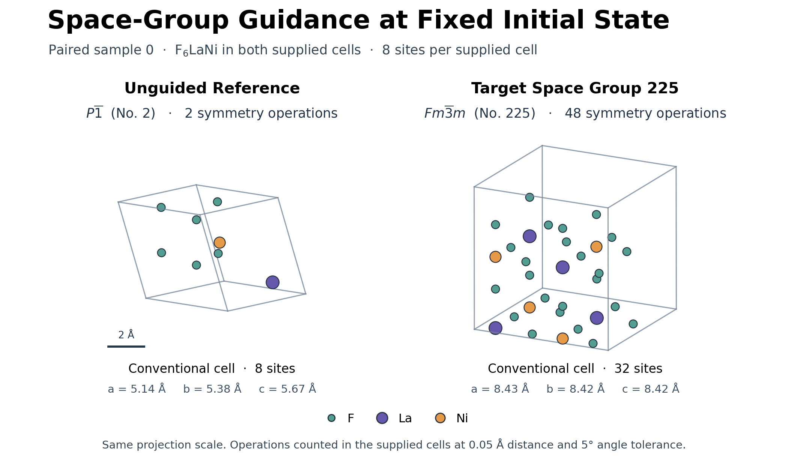

同一份 8 位点初态、同一份冻结的空间群条件模型，产生了两个组成均为 F₆LaNi 的候选。关闭引导时，几何分析识别为 P−1（第 2 号）；请求 Fm−3m（第 225 号） 后，几何分析也识别为第 225 号。在各自输出的晶胞表示中，spglib 分别找到 2 和 48 个对称操作。这对样本恰好组成相同，适合用来说明元素种类与空间排列是两项不同的生成结果。未引导 CIF · 第 225 号条件 CIF

配对方法
在 HKUST 的 RTX A6000 上运行官方 space_group 条件权重。同一批种子 20261118、batch size 4，从默认 ALEX_MP_20 站点数分布得到 8、4、10、20 个站点。共运行三批：关闭引导的共同参考（γ=0）、请求第 1 号（γ=2）、请求第 225 号（γ=2）。每种设置用 1,000 个默认噪声级及官方 PC。三个批次按样本索引配对，分别核对四组首帧的原子编号、晶胞和位置哈希完全相同。关闭引导时命令保留了第 1 号标签，采样器只调用无条件分支。该批结果可作为两个目标共用的背景对照。
空间群编号经学习的查表嵌入送入模型。实际结果用 spglib 从未弛豫的最终 CIF 的晶格、分数坐标和元素重算，并与独立最终 EXTXYZ 的分析交叉核对。主判断采用 symprec=0.05 Å、angle_tolerance=5°；另测 0.01 和 0.10 Å。检测过程没有规整或弛豫结构，CIF 文本中写出的空间群字段也没有参与判定。空间群权重 · 条件编码 · 对称性分析文档
四组初态的实测结果
下表给出 0.05 Å 容差下的国际空间群编号。粗体表示与给定目标完全一致。
| 同一批中的样本 | 位点数 | γ=0 参考 | 请求第 1 号，γ=2 | 请求第 225 号，γ=2 |
|---|---|---|---|---|
| 0 | 8 | 2 | 1 | 225 |
| 1 | 4 | 160 | 2 | 225 |
| 2 | 10 | 44 | 1 | 225 |
| 3 | 20 | 1 | 1 | 74 |
- 请求低对称性。 第 1 号精确命中 3/4，共同参考只有 1/4 属于第 1 号。每一种晶体都具有恒等操作；这里的精确命中要求在指定容差内识别出的完整空间群恰为 P1。
- 请求高对称性。 第 225 号精确命中 3/4，共同参考为 0/4。样本 3 的实际空间群为第 74 号；把容差收紧到 0.01 Å 后识别为第 8 号。两个结果都与请求的第 225 号不同。这个样本可以直接演示“给生成器一个目标”和“测量它做到了什么”。
- 容差敏感性。 在 0.01、0.05、0.10 Å 三种容差下，两个目标各自的命中数都为 3/4。细分的空间群编号仍会随容差改变，例如共同参考中的样本 2 在最严格容差下为第 8 号，在另外两档为第 44 号。四个配对样本足以展示现象，模型总体命中率需要更大样本估计。
三批端到端耗时分别为 85.5、119.5、115.7 秒，每批同时生成四个样本。计时覆盖启动官方 CLI 至全部文件保存，和采样器实验的单样本、纯采样计时口径不同。所有 12 个结构仅完成几何对称性分析。能量、声子和合成性需要各自对应的验证。逐样本数据与容差扫描 · 环境、命令、计时与哈希（课程仓库，需权限）
复用数据与复现实验
每个样本都提供独立最终 CIF 及第一条 EXTXYZ 记录，完整原始轨迹、最终 EXTXYZ、原始 CIF ZIP 和三组运行记录保存在原始数据档案（课程仓库，需权限）。先解压到新目录，再运行下述分析命令的 analyze --runs <该目录> --output <新输出目录>，即可在不运行推理的情况下复核结果。
以下命令在 members/tk/ 下执行，环境沿用推理安装说明（课程仓库，需权限）。权重文件在运行前经过完整 SHA-256 核验，值为 1b6ab06739f4319d75f4a19960840ec3c8d3d32ee842c996876ef9d8b188e4bb。
external/mattergen/.venv/bin/python scripts/download_model.py \
--model space_group --destination external/spacegroup_models \
--revision 5244495dd9a979ff71abc7548a0b14b9deb0069a
CUDA_VISIBLE_DEVICES=7 OMP_NUM_THREADS=2 OPENBLAS_NUM_THREADS=2 MKL_NUM_THREADS=2 \
external/mattergen/.venv/bin/python scripts/space_group_controls.py sample \
--model external/spacegroup_models/checkpoints/space_group --runs runs/sg_reproduction
external/mattergen/.venv/bin/python scripts/space_group_controls.py analyze \
--runs runs/sg_reproduction --output analysis/sg_reproduction